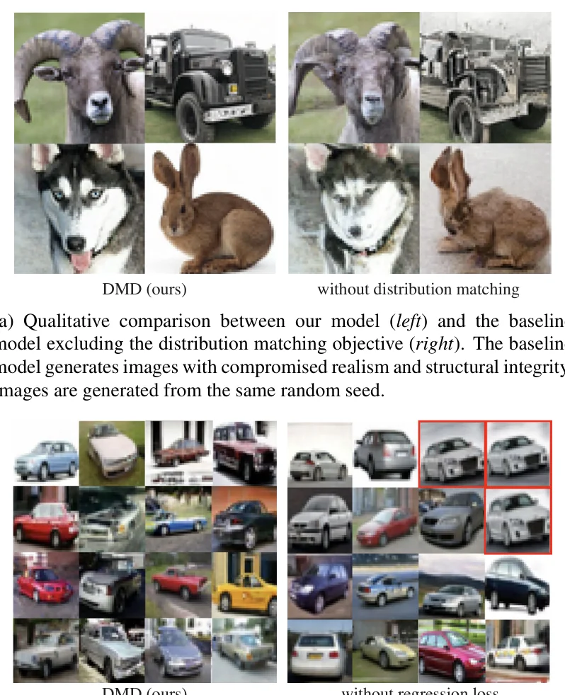

为什么扩散模型需要50步？一步不行吗？
扩散模型（Diffusion Models）在图像生成领域取得了前所未有的质量，但其推理过程需要迭代去噪数十甚至上千步。以Stable Diffusion为例，使用DPM++求解器需要20-50步才能获得高质量结果，单张图像生成耗时数秒。这严重限制了扩散模型在实时应用（如视频生成、交互式编辑）中的部署。
核心矛盾在于：扩散模型的训练目标是逐步去噪，而我们最终只需要干净的图像。直觉上，如果能直接学习"从噪声到图像"的映射，就可以跳过中间所有步骤。但简单的一步训练（即用最后一步的输出直接监督）会导致严重的模式坍塌——学生模型只学会生成少数几种"安全"的输出，丢失了原始模型的多样性。
逐像素对齐 vs 分布匹配：范式转换
传统蒸馏方法（如Progressive Distillation）强制学生模型在相同的噪声-图像对上复现教师的输出。这相当于要求学生画出和老师"一模一样"的画——但生成模型的本质是分布，不是单张图片。DMD的核心洞察是：不需要逐像素对齐，只需要让学生的输出分布与教师的输出分布不可区分。这就像要求学生"画同一主题的画"而非"临摹同一幅画"。
DMD的解决方案优雅而深刻：将蒸馏问题重新定义为分布匹配问题。通过最小化学生生成分布与真实数据分布之间的KL散度，DMD避免了逐像素监督的陷阱，同时保留了生成多样性。这一思想的数学基础来自GAN、MMD和VSD的理论谱系，但DMD将其首次成功应用于扩散模型的大规模蒸馏。
从GMMN到VSD：分布匹配的数学谱系
分布匹配（Distribution Matching）是生成模型的核心范式之一。理解DMD需要先理解这条理论谱系：
2.1 KL散度与分数函数
给定真实分布 $p_{\text{real}}$ 和生成器 $G_\theta$ 的隐式分布 $p_{\text{fake}}$，最小化KL散度：
$$\nabla_\theta D_{\text{KL}}(p_{\text{fake}} \| p_{\text{real}}) = \mathbb{E}_{x \sim p_{\text{fake}}} \left[ -\nabla_\theta \log p_{\text{real}}(x) + \nabla_\theta \log p_{\text{fake}}(x) \right]$$利用 $\nabla_\theta \log p_{\text{fake}}(x) = 0$（重参数化技巧），梯度简化为：
$$\nabla_\theta D_{\text{KL}} \approx \mathbb{E}_{x \sim p_{\text{fake}}} \left[ -s_{\text{real}}(x) \cdot \frac{\partial G_\theta(z)}{\partial \theta} \right]$$其中 $s_{\text{real}}(x) = \nabla_x \log p_{\text{real}}(x)$ 是真实分布的分数函数（score function）。
分数函数的几何意义
分数函数 $s(x) = \nabla_x \log p(x)$ 指向概率密度增长最快的方向。想象概率 landscape 是一座山——分数函数就是山的坡度方向。在高密度区域（山顶），分数函数指向内侧；在低密度区域（山谷），指向最近的山坡。DMD利用这个几何直觉：让生成器沿着分数函数的方向移动样本，使其落入真实数据的高密度区域。
2.2 从GAN到VSD的演进
DMD的理论根基可以追溯到三个关键工作：
- GMMN (Li, Swersky & Zemel, 2015)：使用最大均值差异（MMD）匹配分布，通过核函数在再生核希尔伯特空间中度量分布距离。优点是训练稳定，缺点是核函数选择敏感。
- GAN (Goodfellow et al., 2014)：引入判别器网络隐式估计分布距离，开创了对抗训练范式。但GAN训练不稳定，模式坍塌严重。
- VSD (Wang et al., 2023, NeurIPS Spotlight)：ProlificDreamer提出的变分分数蒸馏，首次用扩散模型同时建模真实和伪分布的分数函数，成功应用于文本到3D生成。DMD将VSD从3D生成扩展到通用的扩散模型蒸馏。
图：分布匹配范式的理论演进谱系
2.3 DMD的独特设计
DMD与前人工作的关键区别在于两点：
（1）双扩散模型架构：DMD同时维护两个扩散模型——$\mu_{\text{real}}$（冻结的教师模型）和 $\mu_{\text{fake}}$（可训练的伪分布模型）。$\mu_{\text{real}}$ 提供真实分布的分数估计，$\mu_{\text{fake}}$ 提供生成器输出分布的分数估计。两者的差异直接驱动生成器的梯度更新。
（2）回归损失补充：纯分布匹配（KL散度）在实践中收敛慢且不稳定。DMD引入回归损失 $\mathcal{L}_{\text{reg}}$，使用LPIPS感知距离监督生成器输出与教师多步输出的对应关系。这提供了"锚点"，加速收敛并稳定训练。
DMD的数学推导：从分数到梯度
3.1 分布匹配损失的推导
给定一步生成器 $G_\theta(z)$，其输出隐式定义了分布 $p_{\text{fake}}$。目标是最小化 $D_{\text{KL}}(p_{\text{fake}} \| p_{\text{real}})$。
扩散模型通过前向过程 $q_t(x_t | x) \sim \mathcal{N}(\alpha_t x, \sigma_t^2 I)$ 定义加噪过程，其中 $\alpha_t, \sigma_t$ 是噪声调度参数。
真实分数（由冻结的教师模型 $\mu_{\text{real}}$ 提供）：
$$s_{\text{real}}(x_t, t) = -\frac{x_t - \alpha_t \mu_{\text{real}}(x_t, t)}{\sigma_t^2}$$伪分数（由可训练的 $\mu_{\text{fake}}$ 提供，用生成器输出作为训练数据）：
$$s_{\text{fake}}(x_t, t) = -\frac{x_t - \alpha_t \mu_{\phi}^{\text{fake}}(x_t, t)}{\sigma_t^2}$$其中 $\mu_{\text{real}}$ 和 $\mu_\phi^{\text{fake}}$ 都是去噪网络，输入为加噪图像 $x_t$ 和时间步 $t$。
将扩散分数代入KL散度梯度，得到DMD的核心更新公式：
$$\nabla_\theta \mathcal{L}_{\text{DMD}} \approx \mathbb{E}_{t, z, x_t} \left[ w_t \cdot \alpha_t \cdot \left( s_{\text{fake}}(x_t, t) - s_{\text{real}}(x_t, t) \right) \cdot \frac{\partial G_\theta(z)}{\partial \theta} \right]$$直觉解释：生成器沿着"伪分数 - 真实分数"的方向更新。当生成器输出偏离真实分布时，两个分数的差异会引导生成器回到正确的分布区域。
图：DMD的核心机制 — 生成器沿伪分数与真实分数的差异方向更新，逐步将 $p_{\text{fake}}$ 拉向 $p_{\text{real}}$
3.2 伪分数模型的训练
$\mu_\phi^{\text{fake}}$ 的训练数据来自生成器的输出 $x = G_\theta(z)$。具体地，对生成器输出加噪得到 $x_t$，然后用标准去噪损失训练：
其中 $x_t = \alpha_t G_\theta(z) + \sigma_t \epsilon$，$\epsilon \sim \mathcal{N}(0, I)$。
关键设计：$\mu_\phi^{\text{fake}}$ 的权重从 $\mu_{\text{real}}$ 初始化，然后用生成器的输出持续微调。这确保了伪分数模型能准确跟踪生成器分布的变化。
为什么需要两个扩散模型？
单个扩散模型只能估计一个分布的分数。DMD需要比较两个分布（真实 vs 生成器输出），因此必须维护两个模型。$\mu_{\text{real}}$ 冻结不动，提供"锚点"；$\mu_\phi^{\text{fake}}$ 持续更新，跟踪生成器分布的变化。这种双模型架构是DMD与传统单模型蒸馏（如Progressive Distillation）的本质区别。代价是额外的计算开销——但换来的是分布级别的对齐而非像素级别的对齐。
样本加权策略与LPIPS回归损失
4.1 样本加权（Sample Weighting）
直接使用Eq.7的梯度在实践中效果不佳——不同噪声水平 $t$ 和不同样本的质量差异很大。DMD引入了自适应样本加权策略：
其中 $C$ 和 $S$ 是归一化常数。分母中的 $\| \mu_{\text{real}}(x_t, t) - x \|_1$ 度量了教师模型在当前噪声水平下的去噪难度。
直觉：对于容易去噪的样本（去噪误差小），给予更大的权重；对于难样本（去噪误差大），给予更小的权重。这避免了困难样本的梯度主导训练过程。
加权策略的信息论解释
从信息论角度看，$w_t$ 的设计隐含了一个重要假设：在低噪声水平（$t$ 小）时，去噪误差小，分数估计更准确，因此应该给予更高权重；在高噪声水平（$t$ 大）时，分数估计噪声大，应该降权。这与扩散模型训练中的信噪比加权策略（SNR-aware weighting）有异曲同工之妙。消融实验（Table 2）验证了这一策略的有效性：使用Eq.8加权后，CIFAR-10 FID从3.97降至2.66。
4.2 回归损失（Regression Loss）
纯分布匹配在理论上可以收敛，但实践中收敛速度慢。DMD引入了回归损失作为"锚点"：
其中 $y = \mu_{\text{real}}(z, T-1; \text{50 steps})$ 是教师模型用50步生成的图像，$\ell_{\text{LPIPS}}$ 是感知距离函数。
最终目标：$\mathcal{L}_{\text{total}} = \mathcal{L}_{\text{DMD}} + \lambda_{\text{reg}} \cdot \mathcal{L}_{\text{reg}}$，其中 $\lambda_{\text{reg}} = 0.25$。
为什么用LPIPS而非L2？ LPIPS（Learned Perceptual Image Patch Similarity）基于深度特征距离，对人眼感知更敏感。L2距离会导致模糊——因为它鼓励所有像素的平均误差最小化，而LPIPS允许局部细节的差异，只要整体感知质量匹配。
回归损失的代价
回归损失需要教师模型生成配对的50步输出，这大幅增加了训练成本。每个训练步都需要运行完整的50步扩散采样——这正是DMD试图避免的。DMD2通过消除回归损失（引入GAN损失替代）解决了这一瓶颈，但原始DMD的这一设计在训练效率上确实存在矛盾。
Classifier-Free Guidance的蒸馏
现代文本到图像扩散模型（如Stable Diffusion）广泛使用Classifier-Free Guidance（CFG）来提升生成质量。CFG通过组合条件和无条件分数来增强文本-图像一致性：
$$\hat{s}(x_t, t, c) = s_{\text{uncond}}(x_t, t) + w \cdot (s_{\text{cond}}(x_t, t, c) - s_{\text{uncond}}(x_t, t))$$其中 $w$ 是guidance scale（通常为7.5-12），$c$ 是文本条件。
DMD的CFG蒸馏策略是：直接蒸馏高guidance scale的教师模型。具体地，教师模型使用guidance scale=8运行50步采样生成配对数据，然后DMD将这个高质量但慢速的教师蒸馏为一步生成器。
高CFG蒸馏的隐含收益
CFG scale越大，生成图像的文本一致性越强，但多样性越低。DMD蒸馏高CFG教师相当于在训练时就"固化"了这种强条件约束——生成器不需要在推理时运行CFG，因为它已经学会了直接生成高文本一致性的图像。这解释了为什么DMD的一步生成在文本-图像对齐上表现优异。
输入: 预训练扩散模型 $\mu_{\text{real}}$, 配对数据集 $\mathcal{D} = \{z_{\text{ref}}, y_{\text{ref}}\}$
输出: 训练好的一步生成器 $G_\theta$
1. 初始化 $G_\theta$ ← $\mu_{\text{real}}(z, T-1)$ // 从教师模型的最后一步初始化
2. 初始化 $\mu_\phi^{\text{fake}}$ ← 复制 $\mu_{\text{real}}$ 权重
3. 循环 直到收敛:
3a. 采样 $z \sim \mathcal{N}(0, I)$，生成 $x = G_\theta(z)$
3b. 计算分布匹配梯度 (Eq.7): 用 $\mu_{\text{real}}$ 和 $\mu_\phi^{\text{fake}}$ 估计分数差异
3c. 计算回归损失 (Eq.9): $\mathcal{L}_{\text{reg}} = \ell_{\text{LPIPS}}(x, y_{\text{ref}})$
3d. 更新 $G_\theta$: $\theta \leftarrow \theta - \eta(\nabla_\theta \mathcal{L}_{\text{DMD}} + 0.25 \cdot \nabla_\theta \mathcal{L}_{\text{reg}})$
3e. 更新 $\mu_\phi^{\text{fake}}$: 用 $\{x\}$ 作为训练数据，最小化 $\mathcal{L}_\phi^{\text{denoise}}$ (Eq.6)
512倍加速：实验验证
6.1 类条件图像生成（ImageNet-64×64）
| 方法 | 步数 | FID ↓ | 加速比 |
|---|---|---|---|
| DDIM (teacher) | 50 | 2.19 | 1× |
| Progressive Distillation | 2 | 4.40 | 25× |
| InstaFlow (Liu et al., 2023) | 1 | 3.29 | 50× |
| DMD (ours) | 1 | 2.62 | 512× |
DMD在ImageNet-64×64上实现了FID 2.62的一步生成，仅比50步教师模型（FID 2.19）略差，但速度提升512倍。值得注意的是，DMD甚至优于两步的Progressive Distillation（FID 4.40）。
6.2 文本到图像生成（LAION-Aesthetic）
| 方法 | 步数 | FID ↓ | CLIP Score |
|---|---|---|---|
| Stable Diffusion v1.5 | 50 | 11.13 | 0.2635 |
| LCM (Luo et al., 2023) | 1 | 13.32 | 0.2572 |
| InstaFlow (Liu et al., 2023) | 1 | 12.88 | 0.2558 |
| DMD (ours) | 1 | 11.49 | 0.2618 |
在MS-COCO 30k零样本评估中，DMD的FID（11.49）最接近原始Stable Diffusion（11.13），实现了约30倍的推理加速。
6.3 消融实验
| 配置 | CIFAR-10 FID ↓ |
|---|---|
| 完整DMD（分布匹配 + 回归损失 + 样本加权Eq.8） | 2.66 |
| 去除分布匹配（仅回归损失） | 8.19 |
| 去除回归损失（仅分布匹配） | 3.77 |
| 均匀加权替代Eq.8 | 3.97 |
消融实验清晰地展示了每个组件的贡献：分布匹配是最核心的（去除后FID从2.66飙升至8.19），回归损失和样本加权各贡献约1个FID点的提升。

DMD消融实验的定性对比：去除分布匹配后生成质量严重退化
DMD2: 消除回归损失瓶颈
DMD的一个重要局限是回归损失的计算成本：每个训练步都需要教师模型运行50步采样生成配对数据。DMD2（Yin et al., 2024, NeurIPS Oral）提出了两个关键改进：
（1）用GAN损失替代回归损失：DMD2引入判别器网络，用对抗损失替代LPIPS回归损失。判别器不需要运行多步扩散，计算成本大幅降低。
（2）支持多步生成器：DMD2不仅支持一步生成，还支持2-4步生成器，在质量和速度之间提供更灵活的权衡。
DMD → DMD2的理论一致性
从理论角度看，DMD2的GAN替代回归损失是一个优雅的改进：回归损失本质上是在数据空间（LPIPS距离）施加约束，而GAN损失是在特征空间（判别器）施加约束。后者更灵活，因为它不需要配对数据。但这也引入了GAN训练的不稳定性——DMD2通过精心的训练策略（如渐进式训练、梯度惩罚）来缓解这一问题。
DMD vs DMD2 架构对比：DMD2用GAN判别器替代昂贵的LPIPS回归损失，训练成本大幅降低
核心算法的PyTorch实现
8.1 分布匹配损失
import torch import torch.nn.functional as F def distribution_matching_loss( generator, # 一步生成器 G_θ real_model, # 冻结的教师扩散模型 μ_real fake_model, # 可训练的伪分布模型 μ_fake z, # 噪声输入 [B, C, H, W] noise_schedule, # 噪声调度器 (α_t, σ_t) timesteps, # 采样的时间步 [B] reg_lambda=0.25, # 回归损失权重 paired_y=None, # 教师50步输出 (用于回归损失) ): # Step 1: 生成器前向传播 x_fake = generator(z) # [B, 3, H, W] # Step 2: 对生成器输出加噪 alpha_t, sigma_t = noise_schedule.get_schedule(timesteps) epsilon = torch.randn_like(x_fake) x_t = alpha_t[:, None, None, None] * x_fake + \ sigma_t[:, None, None, None] * epsilon # Step 3: 估计真实分数和伪分数 # s_real(x_t, t) = -(x_t - α_t * μ_real(x_t, t)) / σ_t² with torch.no_grad(): pred_real = real_model(x_t, timesteps) # 冻结教师 s_real = -(x_t - alpha_t[:, None, None, None] * pred_real) / \ (sigma_t[:, None, None, None] ** 2) pred_fake = fake_model(x_t, timesteps) # 可训练 s_fake = -(x_t - alpha_t[:, None, None, None] * pred_fake) / \ (sigma_t[:, None, None, None] ** 2) # Step 4: 计算分数差异 (梯度信号) score_diff = s_fake - s_real # [B, 3, H, W] # Step 5: 样本加权 (Eq.8) denoise_error = torch.abs(pred_real - x_fake).mean(dim=[1,2,3]) w_t = (sigma_t ** 2) / (alpha_t * denoise_error + 1e-8) w_t = w_t / w_t.mean() # 归一化 # Step 6: DMD梯度 (通过stop_gradient技巧) # ∇_θ L_DMD = w_t * α_t * (s_fake - s_real) * ∂G/∂θ dmd_loss = (w_t[:, None, None, None] * alpha_t[:, None, None, None] * score_diff.detach() * x_fake).mean() # Step 7: 回归损失 (LPIPS) reg_loss = 0 if paired_y is not None: reg_loss = F.l1_loss(x_fake, paired_y) # 简化版; 实际用LPIPS return dmd_loss + reg_lambda * reg_loss
8.2 伪分数模型训练
def train_fake_score( fake_model, # 伪分数模型 μ_fake x_generated, # 生成器输出 [B, 3, H, W] noise_schedule, # 噪声调度器 ): # 随机采样时间步 B = x_generated.shape[0] t = torch.randint(0, 1000, (B,), device=x_generated.device) # 前向加噪 alpha_t, sigma_t = noise_schedule.get_schedule(t) epsilon = torch.randn_like(x_generated) x_t = alpha_t[:, None, None, None] * x_generated + \ sigma_t[:, None, None, None] * epsilon # 去噪损失 (Eq.6): ||μ_fake(x_t, t) - x_0||² pred = fake_model(x_t, t) loss = F.mse_loss(pred, x_generated) return loss
8.3 完整训练循环
def dmd_training_loop( generator, real_model, fake_model, dataloader, optimizer_G, optimizer_F, noise_schedule, num_epochs=50, ): # 冻结教师模型 for p in real_model.parameters(): p.requires_grad = False # 伪分数模型从教师初始化 fake_model.load_state_dict(real_model.state_dict()) for epoch in range(num_epochs): for z, paired_y in dataloader: # ---- 更新生成器 ---- optimizer_G.zero_grad() timesteps = torch.randint(0, 1000, (z.shape[0],)) loss_G = distribution_matching_loss( generator, real_model, fake_model, z, noise_schedule, timesteps, reg_lambda=0.25, paired_y=paired_y, ) loss_G.backward() optimizer_G.step() # ---- 更新伪分数模型 ---- optimizer_F.zero_grad() with torch.no_grad(): x_gen = generator(z) loss_F = train_fake_score( fake_model, x_gen.detach(), noise_schedule ) loss_F.backward() optimizer_F.step()
未解之谜与前沿方向
DMD的KL散度估计偏差有多大？
DMD用扩散模型的去噪输出近似分数函数，但这种近似只在特定噪声水平 $t$ 上成立。当 $t \to T$（高噪声）时，分数估计的方差急剧增大。一个未回答的问题是：DMD的分布匹配梯度与真实KL散度梯度之间的偏差是否有理论上界？如果能推导出这个上界，就可以指导最优的噪声水平采样策略，可能进一步提升蒸馏质量。
研究方向：利用扩散模型的信噪比（SNR）分析框架，推导不同 $t$ 下分数估计的偏差-方差分解。参考Song et al. (2021)的Score SDE理论。
如何将DMD推广到K步生成器？
原始DMD仅支持一步生成器。DMD2虽然支持多步，但其理论分析仍基于一步假设。当生成器步数 $K > 1$ 时，中间步骤的隐变量分布会发生变化，分布匹配的目标函数是否需要修正？是否存在一个最优的 $K$ 值，在加速比和质量之间达到帕累托最优？
研究方向：将Consistency Models的理论框架与DMD结合，分析K步生成器的分布匹配收敛性。参考Song et al. (2023) Consistency Models。
除了GAN和LPIPS，还有什么更好的"锚点"？
DMD用LPIPS回归损失作为收敛锚点，DMD2用GAN替代。但两者都有缺陷：LPIPS需要配对数据，GAN引入训练不稳定性。是否存在第三种方案，既不需要配对数据，又能稳定训练？一个可能的方向是使用自监督特征对齐（如DINOv2特征空间的距离），或者利用扩散模型自身的中间特征作为锚点。
研究方向：探索自监督预训练特征（DINOv2, CLIP）作为回归目标的替代方案，分析不同特征空间的收敛性和质量。
DMD能否用于视频扩散模型的蒸馏？
当前DMD主要验证于图像生成。视频扩散模型（如SVD, Wan）的推理成本更高（数千帧×50步），蒸馏的收益更大。但视频的时序一致性给分布匹配带来新挑战：如何确保蒸馏后的一步视频生成器保持帧间一致性？可能需要在分布匹配损失中加入时序一致性约束。
研究方向：将DMD的分布匹配框架扩展到视频潜空间，引入光流或时序注意力作为一致性正则化项。
DMD对噪声调度器的选择有多敏感？
DMD的性能是否强烈依赖于噪声调度器（如linear vs cosine schedule）的选择？不同的调度器会影响分数估计的方差分布，进而影响样本加权策略的有效性。是否存在一个与调度器无关的分布匹配目标？
研究方向：分析不同噪声调度器下DMD梯度的方差，设计自适应调度器来最小化分布匹配梯度的方差。